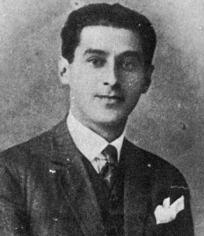

Милош Црњански је један од најважнијих српских песника 20. века. Његове песме су пуне емоција, сећања, туге, чежње и питања о смислу живота. Писао је слободним стихом и донео нови израз у српску поезију.
Најпознатије збирке: 🔹 Лирика Итаке (1919) – Прва збирка, у којој пише о рату, губитку и носталгији. Итака је симбол изгубљеног дома и вечне чежње. 🔹 Суматра (песма, 1920) – Из ње је настала идеја суматраменја – да је цео свет повезан и да све има свој смисао и место. 🔹 Ламент над Београдом (1965) – Збирка настала после повратка из емиграције. Пуна је туге, сећања и љубави према Београду.
